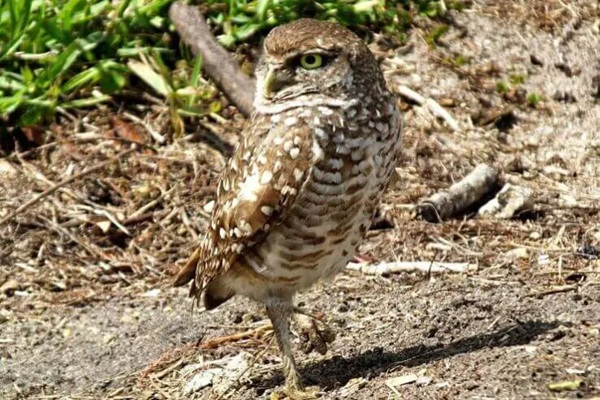

The Burrowing Owl, a captivating and distinctive species, can be encountered across the expanses of North and South America. These owls exhibit remarkable features such as long legs and a diminutive stature, often finding refuge in burrows crafted by prairie dogs or other subterranean mammals.
Their intriguing behaviour sets them apart, as they remain active throughout both day and night, providing birdwatchers with an enthralling sight. A fascinating tidbit about the Burrowing Owl is their peculiar habit of adorning their burrows with manure and animal dung. This unconventional behaviour serves a purpose as it attracts insects, which become a delectable feast for these owls.
In the beautiful state of Minnesota, the Burrowing Owl showcases its remarkable nesting behaviour, setting itself apart from its avian counterparts. These charming owls ingeniously excavate their burrows within the rich soil, creating cozy underground dwellings that serve as their sanctuaries.
It’s fascinating to witness how they meticulously fashion their burrows, ensuring they provide optimum protection from the harsh northern elements. These resourceful creatures also display an affinity for repurposing abandoned burrows crafted by other small mammals, showcasing their adaptability and ability to make a home wherever they go.
When it comes to their palate, Burrowing Owls in Minnesota exhibit an eclectic taste that reflects their versatility as hunters. These delightful owls relish a varied diet that includes delectable insects, small mammals scurrying across the prairies, and even the occasional reptilian treat.
It’s intriguing to note how their diet varies with the seasons, aligning with the ebb and flow of nature’s abundance. With their sharp talons and keen eyesight, these owls display masterful hunting skills, effortlessly pouncing upon unsuspecting prey with surgical precision.
Minnesota’s Burrowing Owls have encountered their fair share of challenges on the conservation front, but dedicated efforts have been made to ensure their continued existence in the state’s diverse landscapes.
Conservationists and local communities have joined forces to protect and restore the owl’s natural habitats, fostering an environment that encourages their burrow-building prowess. These passionate individuals have worked tirelessly to create safe spaces and raise awareness about the importance of preserving the unique ecosystems that these owls call home.